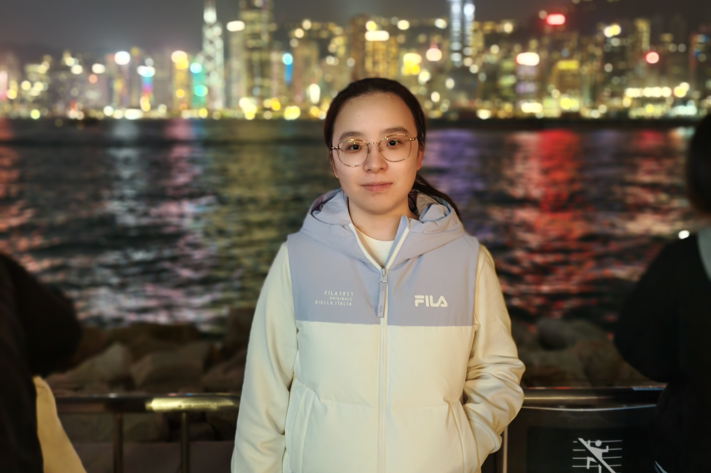

PhD Student in Mathematics
Hong Kong Baptist University

I am currently a PhD student in Mathematics at Hong Kong Baptist University. My research focuses on statistical methods for meta-analysis. I received my master's degree in Statistics from the University of New South Wales and my bachelor's degree in Physics from ShanghaiTech University. From 2020 to 2022, I worked as a statistician at the Clinical Research Unit of Shanghai First Maternity and Infant Hospital, supporting clinical research projects.
Hong Kong Baptist University
Clinical research unit, Shanghai first maternity and Infant Hospital
University of New South Wales
ShanghaiTech University
To be added.
Feel free to reach out for opportunities, collaborations, or further information.
Email: nijy951022@gmail.com
Phone: +852 15201737875